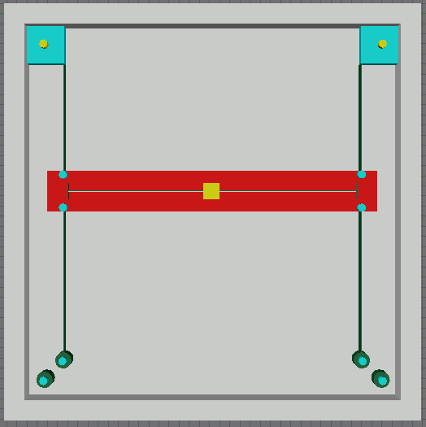
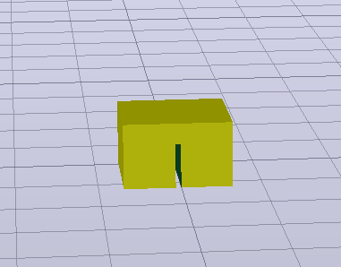
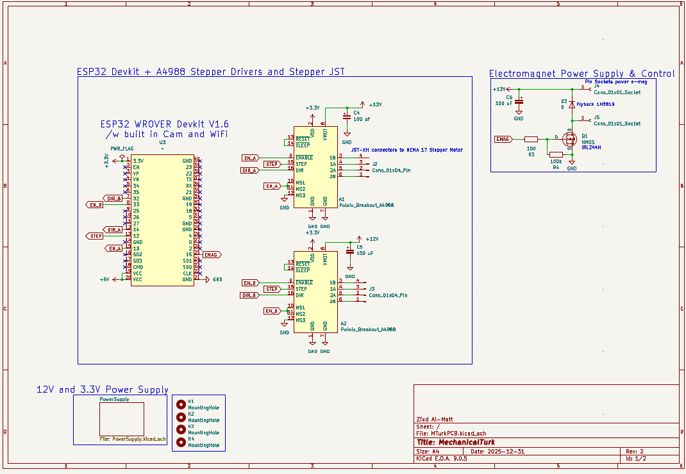
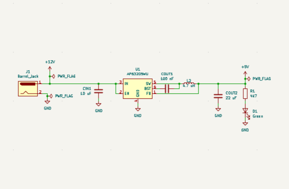
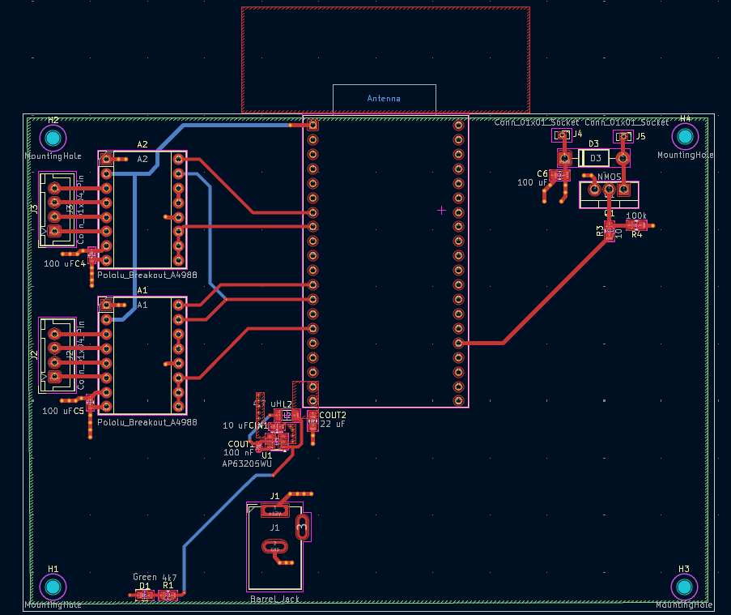
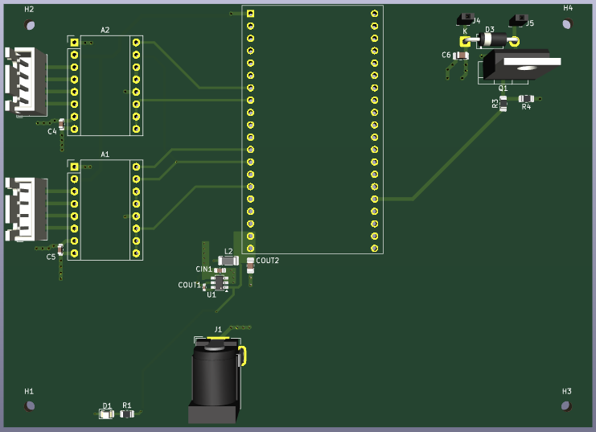

Project Goals
The board registers user moves via a camera connected to the ESP32, the ESP sends the image to a websocket server on a host computer that runs it through a neural network to identify the current board state and update the game on a chess platform.
The server sends commands to move pieces on the physical board to match opponent moves in real-time. This is achieved through the CoreXY mechanism shown below driven by stepper motors, to move an electromagnet that can pick up and place chess pieces on the board. The complete coreXY 3D model is included in the github repository of this project.


Key Components
| Microcontroller | ESP32 |
| Motion System | CoreXY Mechanism |
| Piece Detection | YOLOv8 |
| Chess Platform | Chess.com |
| Communication | Wi-Fi to websocket server |
| Power Supply | 12V 3A for steppers + 5V buck converter and 3.3V LDO |
Circuit Design
The three sections below are logic level control from the ESP32, electromagnet control, and power supply from a barrel jack and a buck converter.


Board Design
4-layers where used to ensure clean ground and power planes and easy routing as well as good thermal dissipation.


What I Learned
This project has been the first real world application of my engineering skills. I've learned a lot about integrating hardware and software, debugging complex systems, and the importance of careful design and testing.
Challenge #1 — Electromagnet Overheating
E.g. "The electromagnet would overheat after approximately 10 minutes of on and off toggling, making it impractical for the duration of a typical game. Afte doing some research, I discovered this model was not designed for continuous operation, and so I replaced it with a more appropriate alternative. This highlighted the importance of careful component selection and thermal management."
Challenge #2 — Complicated Maneuvers
Certain moves in chess, such as knight jumps, casteling, and capturing, require quick and precise movements. I had to implement specific algorithms to break down these maneuvers into simpler steps that the CoreXY mechanism could execute reliably.
Challenge #3 — QA Testing
As this was my thesis project, I needed to test every component thoroughly so I can accurately report on its performance and highlight any limitations or areas for improvement. For example, testing the percision of my motors, the accuracy of the piece detection system, and the previously mentioned electromagnet overheating.